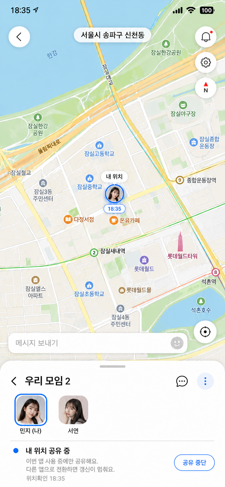
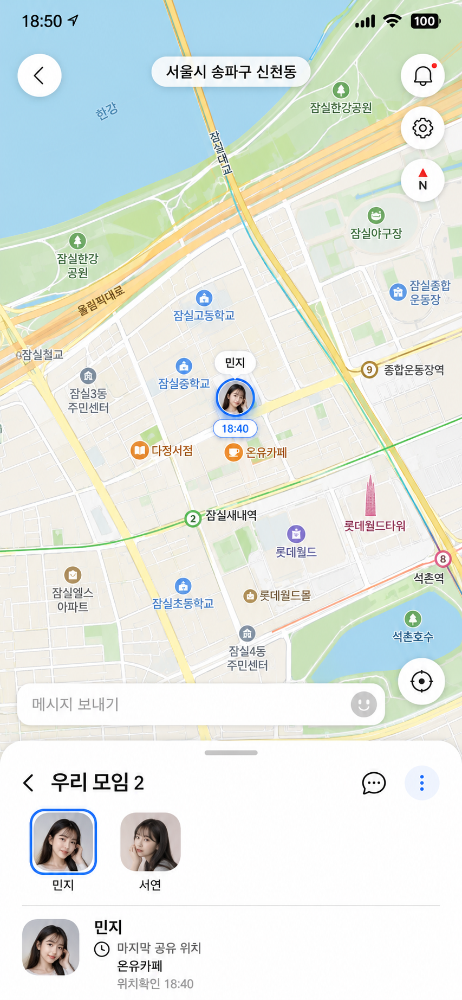

소셜미디어 · 플랫폼의 소셜화
「카카오맵의
친구위치 분석」
분석 질문연결은 유지하면서 위치 공개는 내가 선택할 수 있을까?
배진혁20231675

화면: 카카오맵, 2025.11.12 공식 예시 · 분석 기준: 2026.10.16
02분석 대상과 선정 이유
카카오맵에 관계와 대화가 더해진 기능

앱의 기본 목적
장소를 찾고 이동 경로를 확인
분석할 소셜 기능
친구의 위치를 보며 지도에서 대화
사용 경험의 범위
- 상황
- 친구 위치 확인
- 함께 사용
- 연결된 친구들
- 목적
- 연락·모임 조율
선정 이유
편리한 위치 확인이 지속적인 노출 부담으로 이어질 수 있습니다
공유 중단 표시 때문에 그 선택을 설명해야 한다고 느끼는 경험에 주목했습니다.
분석 범위포함위치 확인·지도 대화·공개 통제제외러닝·맛집 목록
경험: 발표자 진술 · 화면: 카카오맵, 2025.11.12 공식 예시(개인 앱 직접 캡처 아님)
03Tier 1이 기능이 등장한 배경
친구위치 도입과 플랫폼의 압력
강의 모형에 따른 분석
기본 기능을 넘어 이용할 이유를 더합니다
친구 확인과 만남 조율을 장소 탐색에 연결합니다. 차별화 압력에 대한 해석입니다.
친구 확인이 재방문의 계기가 됩니다
더 자주 열 가능성은 있지만, 친구위치의 체류시간 증가 효과는 공개 자료로 확인하지 못했습니다.
지도 이용에 기존 친구 관계를 연결해, 이동 전후에도 이용할 이유를 만들 수 있습니다.
공식 목적: 카카오맵, 2019.11.04 · 개편 화면: 카카오맵, 2025.11.12 · 압력 분석은 강의 틀을 적용한 해석
04Tier 2기능이 작동하는 방식
위치를 보고 대화하며 만남을 조율합니다
- 1
보는 것
친구위치 초대에 동의하고 그룹에 연결
- 2
내 반응
지도에서 친구의 위치와 말풍선 확인
- 3
다음 행동
지도 채팅이나 별도 연락으로 약속 조율
강의 메커니즘과 연결
체류시간
친구 확인은 재방문 계기. 시간 증가량은 미확인.
실제 이용 전환
위치 정보와 대화가 연락·만남 판단으로 이어짐.
데이터·추천 순환
공유 데이터의 추천 개선 효과는 확인하지 못함.
경험 근거
위치만 확인한 경우와 지도 안에서 대화한 경우를 모두 사용했습니다.
화면·기능: 카카오맵, 2025.11.12 공식 예시 · 매출 전환이나 추천 성능 향상으로 해석하지 않음
05Tier 3이용이 쌓인 뒤의 결과
공동 이용과 관계의 이동 비용
함께 이용하며 만들어지는 것
공유 그룹
친구 관계
위치를 함께 보는 연결
소통
지도 위 대화
상황을 설명하고 반응
사용 관행
확인하는 습관
공동 이용으로 생길 가능성
기록·평판
근거 부족
축적량·이전 손실 미측정
다른 위치공유 앱으로 옮긴다면
함께 쓰던 편의
- 지도와 대화의 연결
- 그룹의 공동 이용 방식
다시 맞출 것
- 상대의 설치·동의
- 새 공유 그룹과 설정
사회적 락인
가능성함께 쓰는 관계가 전환 비용이 될 수 있음.
네트워크 외부성
구조 해석함께 위치를 공유하는 친구가 있어야 쓸모가 생김.
슈퍼앱화
확인 부족지도·소통 결합만으로 슈퍼앱 성과를 단정하기 어려움.
공유 그룹·대화: 카카오맵, 2025.11.12 · 락인과 전환 비용은 구조적 해석이며 유지율 실측이 아님
06Molinillo 5요인 종합 평가
실용적 정보와 사회적 현존감이 중심입니다
| 요인 | 평가 | 사용 경험·기능 근거 |
|---|---|---|
| 정보적 지지다른 이용자의 정보·조언이 도움이 되는가 | 보통 | 위치와 지도 대화가 모임 조율을 돕습니다. 조언·추천보다 실용 정보에 가깝습니다. |
| 정서적 지지공감·위로·격려를 얻는가 | 근거 부족 | 채팅·반응 기능은 있지만, 위로·격려를 얻은 경험은 확인하지 못했습니다. |
| 몰입 (Flow)이용에 집중해 빠져드는가 | 근거 부족 | 상시 공유 시간은 몰입의 증거가 아닙니다. 집중·시간 감각의 변화는 미측정입니다. |
| 사회적 현존감다른 사람의 존재와 연결을 느끼게 하는가 | 강함 | 프로필·위치·말풍선이 친구의 존재를 지도 위에 표현합니다. 기능 구조 기준 평가입니다. |
| 플랫폼 품질편리함과 신뢰할 수 있는 통제를 제공하는가 | 보통 | 지도와 소통의 결합은 편리하지만, 지속 노출과 중단 표시에는 부담을 느꼈습니다. |
정성 평가 강함보통약함근거 부족 이용자 전체의 통계 점수가 아닙니다
평가 틀: Molinillo 외, 2018 · 전자상거래 연구의 요인을 앱 분석에 적용(웹사이트 품질을 플랫폼 품질로 표현)
07핵심 강점과 한계
만남의 편리함과 공개 중단의 부담
관계와 장소를 한 화면에서 확인
- 기능과 경험
- 친구 위치를 확인하고 지도에서 대화하며 연락·모임을 조율할 수 있습니다.
- 관련 요인
- 정보적 지지와 사회적 현존감
중단 선택이 해명 부담으로 이어질 수 있음
- 이미 있는 통제 수단
- 그룹별 숨기기·예약, 1~6시간 시간그룹
- 사용 경험에서 제기한 문제
- 상대에게 공유를 껐다는 표시가 나와, 그 이유를 물을 수 있습니다.
- 관련 요인
- 플랫폼 품질의 공개 통제 경험
우선 보완할 점
연결을 유지하면서, 공개 중단 이유를 드러내지 않을 선택권
8장 개선안으로 →본인 숨기기 화면: 카카오맵, 2025.11.12 · 시간그룹: 카카오맵, 2026.04.21 · 상대의 꺼짐 표시는 사용자 진술(직접 캡처 미확보)
08개선안
중단 이유를 드러내지 않는 공개 통제
해결할 한계공유 중단의 해명 부담적용 상황친구 연결은 유지하고 지금의 노출만 줄이고 싶을 때


- 1
공유를 시작할 때
기본은 갱신 OFF. 친구위치에서 동의한 경우에만 이번 앱 사용 중 공유합니다.
- 2
공유를 멈출 때
직접 중단하거나 앱을 나가면 갱신을 멈춥니다. 다시 열어도 자동 재개하지 않습니다.
- 3
상대에게 보이는 것
마지막 공유 위치와 시각은 남기되, 꺼짐·종료 이유를 별도로 표시하지 않습니다.
추가 선택권마지막 기록 유지↔완전 비공개·기록 삭제
기존 시간·상시 공유 선택지도 유지합니다. 새 정책은 제안이며 미구현입니다.
화면: 내장 ImageGen 제안 목업 · 과거 위치를 현재로 단정하지 않음 · 동일 세션·복귀 재동의 조합의 현행 제공 여부는 미확인
09기대 효과와 예상 한계
공개자료는 필요성을 뒷받침합니다
기대 효과미검증
- 원할 때만 위치를 공개하는 통제감
- 중단 이유를 설명해야 하는 부담 완화
- 친구 연결을 유지한 채 공개 범위 조절
예상 한계
- 앱 전환 시 갱신 중단과 재동의로 만남 조율이 번거로워짐
- 마지막 확인 시각으로 중단을 추측할 수 있음
- 오래된 위치를 현재로 오해할 가능성
추가 검증: 해명 부담 점수, 모의 질문 선택률, 현재 위치 오인률
필요성의 공개 근거해외 조사
- 45% · 추적을 원하지 않음미국 조사에서 위치 기능을 끄는 이유로 선택
- 41% · 일부 시간에만 필요같은 하위집단의 응답. 복수응답으로 합산 불가
- 13.6% · 원할 때 연인 위치를 추적할 기대호주 성인 2,046명 중 합당하다는 태도. 피해율 아님
Harris: 전체 1,054명 중 일부 시간 끄는 하위집단, 비가중 n=764. 기기 위치 기능 전반의 가중 응답입니다. 카카오맵 이용자 비율·본 개선안의 효과가 아닙니다.
Harris·NYT, 2022, Q5 · Harris 조사 방법 · eSafety, 2024.11.25 · 효과 비교 실험은 실시하지 않음
10결론
친구위치는 지도 위에서 만남과 소통을 돕습니다.
위치 공개를 멈추는 선택에는 해명 부담이 생길 수 있습니다.
그래서 갱신 시점과 중단 이유의 노출을 본인이 고르는 방식을 제안합니다.
질의응답
공개 수치는 개선의 필요성을 뒷받침하는 자료이며, 제안의 효과는 추가 검증 대상입니다.
부록참고자료
참고자료와 근거의 범위
공식 기능·강의
- 카카오맵, 2019.11.04
톡친구 위치공유 도입 목적 - 카카오맵, 2025.11.12
친구위치 개편·그룹별 숨기기·예약 - 카카오맵, 2026.04.21
기본 1시간·최대 6시간 시간그룹 - 「플랫폼의 소셜화」 5주차 강의자료, 39~40쪽. 발표 8분과 Q&A 2분, 별도 한 장 요약본.
분석·통계
- Molinillo 외, 2018
A Social Commerce Intention Model for Traditional E-Commerce Sites. 13(2), 80–93. 원래 전자상거래 연구의 평가 틀을 적용. - Harris·NYT, 2022, Q5 · Harris 조사 방법
2022.07.29~08.01, 미국 전체 n=1,054. Q5 비가중 n=764, 가중 N=773, 복수응답. - eSafety, 2024.11.25
호주 성인 n=2,046. 13.6%는 연인 추적 기대에 대한 태도.
화면·설계 선례
- 1~5·7장: 카카오맵 공식 공개 예시의 해당 화면 영역. 개인 앱 직접 캡처로 표시하지 않음.
- 8장: 내장 ImageGen으로 제작한 비공식 제안 시안. 민지·서연·장소는 가상 설정.
- Tsai 외, CHI 2009
n=56. 위치 제공 불가 사유를 구분하지 않는 설계 선례. 해당 표현의 효과를 분리 검증한 연구는 아님. - 마지막 위치 유지·복귀 재동의는 제안. 최신 앱의 정확한 정책 조합은 직접 검증하지 않음.